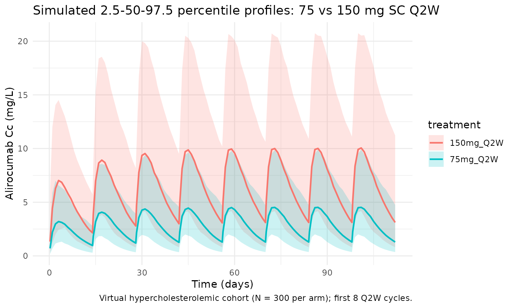
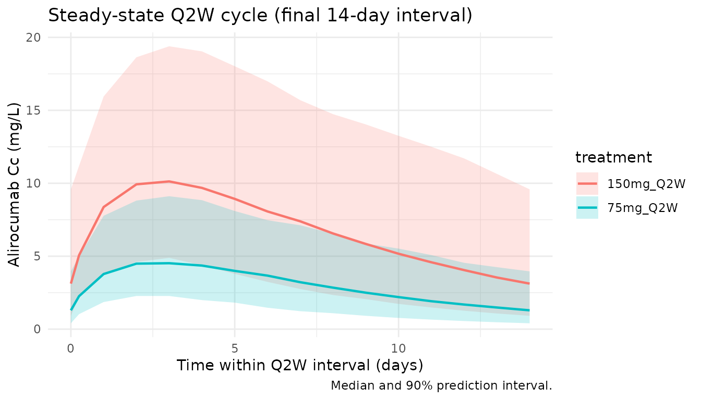

Martinez_2019_alirocumab
Source:vignettes/articles/Martinez_2019_alirocumab.Rmd
Martinez_2019_alirocumab.RmdModel and source
- Citation: Martinez JM, Brunet A, Hurbin F, DiCioccio AT, Rauch C, Fabre D. Population Pharmacokinetic Analysis of Alirocumab in Healthy Volunteers or Hypercholesterolemic Subjects Using a Michaelis-Menten Approximation of a Target-Mediated Drug Disposition Model - Support for a Biologics License Application Submission: Part I. Clin Pharmacokinet. 2019;58(1):101-113. doi:10.1007/s40262-018-0669-y
- Description: Two-compartment population PK model for alirocumab in healthy volunteers and adults with hypercholesterolemia (Martinez 2019, Part I), with first-order SC absorption (with lag time), linear plus Michaelis-Menten (target-mediated) elimination from the central compartment, and logit-transformed bioavailability.
- Article: Clin Pharmacokinet. 2019;58(1):101-113 (open access via PMC6325993)
Part II of the same series (doi:10.1007/s40262-018-0670-5) couples this PopPK model to an indirect-response LDL-C model; only the Part I PK structure is implemented here.
Population
Martinez 2019 pooled 13 phase I-III alirocumab trials into a final population PK dataset of 2799 subjects and 13,717 serum concentrations. The dataset consisted of healthy volunteers and adult patients with hypercholesterolemia (familial and non-familial, with or without established coronary heart disease), including two Japanese phase I/II cohorts. Dosing was SC 50-300 mg single or repeated (Q2W / Q4W over up to 104 weeks, truncated at 24 weeks for the current analysis); one phase I study gave single IV doses of 0.3-12 mg/kg. The marketed regimens are 75 mg and 150 mg SC Q2W.
Baseline characteristics from the Martinez 2019 Table 2 footnotes: median body weight 82.9 kg, median age 60 years, and time-varying median free PCSK9 concentration 72.9 ng/mL (baseline median 283 ng/mL; time-varying 5th/95th percentiles 0/392 ng/mL). Concomitant statin use (rosuvastatin < 20 mg/day, atorvastatin < 40 mg/day, or simvastatin at any dose) was the other clinically-relevant covariate retained in the final model. Sex, race, renal function, BMI, and ADA positivity were evaluated but not retained.
The same information is available programmatically via
readModelDb("Martinez_2019_alirocumab")$population.
Source trace
Every structural parameter, covariate effect, IIV element, and residual-error term below is taken from Martinez 2019 Table 2 (“Final model with covariates” column) and its footnotes a-e. Reference covariate values: 82.9 kg body weight, 60 years age, no concomitant statin (STATIN = 0), and 72.9 ng/mL free PCSK9.
| Equation / parameter | Value (paper / model file) | Source location |
|---|---|---|
lka (Ka) |
0.00768 /h * 24 = 0.18432 /day |
Table 2, Ka row |
lcl (CLL) |
0.0124 L/h * 24 = 0.2976 L/day |
Table 2, CLL row |
lvc (V2) |
3.19 L |
Table 2, V2 row |
lvp (V3 at AGE = 60 y) |
2.79 L |
Table 2, V3 row |
lq (Q) |
0.0185 L/h * 24 = 0.444 L/day |
Table 2, Q row |
lvm (Vm) |
0.183 mg/h * 24 = 4.392 mg/day |
Table 2, Vm row (text says “mg/h”; table footer “mg.h/L” is a typesetting error — dimensional analysis and the paper’s narrative confirm mg/h) |
lkm (Km at FPCSK9 = 72.9) |
7.73 mg/L |
Table 2, Km row |
llag (LAG) |
0.641 h / 24 = 0.02671 day |
Table 2, LAG row |
logitfdepot (logit F_pop) |
logit(0.862) = 1.8326 |
Table 2, F row (typical F = 0.862) |
e_wt_cl (WT additive slope) |
2.92e-4 L/h/kg * 24 = 7.008e-3 L/day/kg |
Table 2 theta12, Table 2 footnote a |
e_statin_cl (STATIN additive) |
6.44e-3 L/h * 24 = 0.15456 L/day |
Table 2 theta13, Table 2 footnote a |
e_age_vp (AGE power exponent) |
0.310 |
Table 2 theta15, Table 2 footnote b |
e_fpcsk9_km (FPCSK9 slope) |
-0.541 mg/L per (FPCSK9/72.9) |
Table 2 theta14, Table 2 footnote c |
var(etalcl) |
0.232 (CV 48.2%) |
Table 2, omega^2 CLL row |
var(etalvc) |
0.589 (CV 76.7%) |
Table 2, omega^2 V2 row |
var(etalvp) |
0.0735 (CV 27.1%) |
Table 2, omega^2 V3 row |
var(etalkm) |
0.298 (CV 54.6%) |
Table 2, omega^2 Km row |
cov(etalvp, etalkm) |
-0.793 * sqrt(0.0735*0.298) = -0.11738 |
Table 2 footnote d (r = -0.793) |
var(etalogitfdepot) |
1.060 (logit-space, 103%) |
Table 2 omega^2 F row, footnote e |
propSd |
0.259 (25.9%) |
Table 2, theta8 |
addSd |
0.0465 mg/L |
Table 2, theta9 |
| Structure (2-cmt + 1st-order SC, linear + MM from central) | n/a | Fig. 1 and Results §3.1 |
| CLL equation | TVCLL + COV1*(WT - 82.9) + COV2*STATIN |
Table 2 footnote a, Eq in Results §3.1 |
| Km equation | TVKM + COV3*(FPCSK9 / 72.9) |
Table 2 footnote c, Eq in Results §3.1 |
| V3 equation | TVV3 * (AGE / 60)^COV4 |
Table 2 footnote b, Eq in Results §3.1 |
Parameterization notes
-
Time-unit conversion. Martinez 2019 reports rates
in h^-1; the model file converts to day^-1 (
x 24) to follow the nlmixr2lib convention. Volumes (V2, V3), the bioavailability factor, and the FPCSK9 / AGE / WT covariate normalizations are time-independent and are carried through unchanged. -
Additive covariate structure on CLL and Km.
Martinez’s paper uses additive (rather than multiplicative) covariate
models on the linear clearance CLL and on Km, evaluated on the
population typical value:
CLL_TV = TVCLL + theta * (WT - 82.9) + theta * STATINandKm_TV = TVKM + theta * (FPCSK9 / 72.9). Individual values then carry an exponential between-subject term:CLL_i = CLL_TV * exp(eta_CLL). This is preserved faithfully inmodel()rather than being refactored to a multiplicative / power form. -
Power covariate on V3.
V3_TV = TVV3 * (AGE / 60)^0.310(Table 2 footnote b). Individual V3 isV3_i = V3_TV * exp(eta_V3). -
Correlated V3 / Km. The paper reports an
omega-block covariance between eta_V3 and eta_Km with correlation r =
-0.793 (Table 2 footnote d). The 2x2 block off-diagonal is the
correlation times
sqrt(var_V3 * var_Km), i.e.-0.793 * sqrt(0.0735 * 0.298) = -0.11738. -
Logit bioavailability. F IIV was estimated in logit
space with omega^2 = 1.060 (Table 2 footnote e). The model parameterizes
logitfdepot = logit(0.862)witheta_logit_F ~ N(0, 1.060); the individual F is the inverse logit of the sum. - No IIV on Ka / Q / Vm / LAG. Martinez states no interindividual term could be estimated for these four parameters; the model file omits them from the random-effects block, matching the paper.
-
Michaelis-Menten form. The elimination ODE term is
- vm * Cc / (km + Cc)(rate of amount elimination with Vm in mg/day, Km in mg/L, and Cc = central / V2 in mg/L), matching the popPK convention used in Xu 2019 sarilumab and the in-file parameter units. -
SC vs IV. The bioavailability factor and lag time
are applied to the depot compartment. IV doses (the 0.3-12 mg/kg
single-dose phase I study) bypass depot by dosing directly to
centralviacmt = "central".
Virtual cohort
The simulations below use a virtual cohort whose covariate distributions approximate the Martinez 2019 study population medians and ranges. No subject-level observed data were released with the paper.
set.seed(20260424)
n_subj <- 300
cohort <- tibble::tibble(
id = seq_len(n_subj),
WT = pmin(pmax(rnorm(n_subj, mean = 82.9, sd = 18), 45, 150)),
AGE = pmin(pmax(rnorm(n_subj, mean = 60, sd = 12), 18, 90)),
STATIN = rbinom(n_subj, size = 1, prob = 0.80),
FPCSK9 = pmin(pmax(rnorm(n_subj, mean = 72.9, sd = 120), 0, 400))
)Three regimens are simulated in parallel: 75 mg SC Q2W (lower-dose standard), 150 mg SC Q2W (higher-dose standard), and 300 mg SC Q4W (equal 4-week dose to 150 mg Q2W, tested in phase I/II). Dosing extends past the alirocumab terminal half-life (~14-21 days in the linear range at high concentrations) to reach steady state before the NCA interval.
tau_q2w <- 14 # Q2W dosing interval (days)
n_doses <- 26 # 26 Q2W doses -> 350 days (~50 weeks), steady state
dose_days_q2w <- seq(0, tau_q2w * (n_doses - 1), by = tau_q2w)
tau_q4w <- 28
n_doses_q4w <- 13
dose_days_q4w <- seq(0, tau_q4w * (n_doses_q4w - 1), by = tau_q4w)
make_cohort <- function(cohort, dose_amt, dose_days, treatment, tau,
id_offset = 0L) {
coh <- cohort |> dplyr::mutate(id = id + id_offset)
ev_dose <- coh |>
tidyr::crossing(time = dose_days) |>
dplyr::mutate(amt = dose_amt, cmt = "depot", evid = 1L,
treatment = treatment)
obs_days <- sort(unique(c(
seq(0, max(dose_days) + tau, by = 1),
dose_days + 0.25,
dose_days + 1,
dose_days + 3,
dose_days + 7
)))
ev_obs <- coh |>
tidyr::crossing(time = obs_days) |>
dplyr::mutate(amt = 0, cmt = NA_character_, evid = 0L,
treatment = treatment)
dplyr::bind_rows(ev_dose, ev_obs) |>
dplyr::arrange(id, time, dplyr::desc(evid)) |>
dplyr::select(id, time, amt, cmt, evid, treatment,
WT, AGE, STATIN, FPCSK9)
}
events_75 <- make_cohort(cohort, 75, dose_days_q2w, "75mg_Q2W", tau_q2w,
id_offset = 0L)
events_150 <- make_cohort(cohort, 150, dose_days_q2w, "150mg_Q2W", tau_q2w,
id_offset = 1000L)
events_300 <- make_cohort(cohort, 300, dose_days_q4w, "300mg_Q4W", tau_q4w,
id_offset = 2000L)
events <- dplyr::bind_rows(events_75, events_150, events_300)
stopifnot(!anyDuplicated(unique(events[, c("id", "time", "evid")])))Simulation
mod <- rxode2::rxode2(readModelDb("Martinez_2019_alirocumab"))
#> ℹ parameter labels from comments will be replaced by 'label()'
keep_cols <- c("WT", "AGE", "STATIN", "FPCSK9", "treatment")
sim <- lapply(split(events, events$treatment), function(ev) {
as.data.frame(rxode2::rxSolve(mod, events = ev, keep = keep_cols))
}) |> dplyr::bind_rows()Replicate published figures
Concentration-time profile (VPC-style)
Martinez 2019 Figure 2 shows visual predictive checks of serum alirocumab concentrations per study, with predictions capturing the 2.5th-97.5th percentiles of observed concentrations. The block below reproduces a VPC-style plot over the first eight Q2W cycles for the 75 mg and 150 mg regimens.
vpc <- sim |>
dplyr::filter(!is.na(Cc), time > 0, time <= 112,
treatment %in% c("75mg_Q2W", "150mg_Q2W")) |>
dplyr::group_by(treatment, time) |>
dplyr::summarise(
Q025 = quantile(Cc, 0.025, na.rm = TRUE),
Q50 = quantile(Cc, 0.50, na.rm = TRUE),
Q975 = quantile(Cc, 0.975, na.rm = TRUE),
.groups = "drop"
)
ggplot(vpc, aes(time, Q50, colour = treatment, fill = treatment)) +
geom_ribbon(aes(ymin = Q025, ymax = Q975), alpha = 0.2, colour = NA) +
geom_line(linewidth = 0.8) +
labs(
x = "Time (days)",
y = "Alirocumab Cc (mg/L)",
title = "Simulated 2.5-50-97.5 percentile profiles: 75 vs 150 mg SC Q2W",
caption = "Virtual hypercholesterolemic cohort (N = 300 per arm); first 8 Q2W cycles."
) +
theme_minimal()
Steady-state cycle
The final Q2W dosing interval in the 350-day simulation window is
used for the steady-state NCA below (ss_start to
ss_end).
ss_start <- tau_q2w * (n_doses - 1)
ss_end <- ss_start + tau_q2w
ss_summary <- sim |>
dplyr::filter(time >= ss_start, time <= ss_end, !is.na(Cc),
treatment %in% c("75mg_Q2W", "150mg_Q2W")) |>
dplyr::group_by(treatment, time) |>
dplyr::summarise(
Q05 = quantile(Cc, 0.05, na.rm = TRUE),
Q50 = quantile(Cc, 0.50, na.rm = TRUE),
Q95 = quantile(Cc, 0.95, na.rm = TRUE),
.groups = "drop"
)
ggplot(ss_summary, aes(time - ss_start, Q50, colour = treatment, fill = treatment)) +
geom_ribbon(aes(ymin = Q05, ymax = Q95), alpha = 0.2, colour = NA) +
geom_line(linewidth = 0.8) +
labs(
x = "Time within Q2W interval (days)",
y = "Alirocumab Cc (mg/L)",
title = "Steady-state Q2W cycle (final 14-day interval)",
caption = "Median and 90% prediction interval."
) +
theme_minimal()
Body-weight impact on CLL
Martinez 2019 reports that CLL decreases by 78% for a 50 kg subject and increases by 40% for a 100 kg subject versus a typical 82.9 kg subject (Results §3.2). The block below reproduces those numbers directly from the additive covariate equation.
wt_grid <- tibble::tibble(
WT_kg = c(50, 60, 70, 82.9, 90, 100, 110)
)
TVCLL <- 0.0124 # L/h (Martinez 2019 Table 2)
coef_wt <- 2.92e-4 # L/h/kg
wt_grid <- wt_grid |>
dplyr::mutate(
CLL_Lph = TVCLL + coef_wt * (WT_kg - 82.9),
pct_vs_medianWT = 100 * (CLL_Lph - TVCLL) / TVCLL
)
knitr::kable(wt_grid, digits = 4,
caption = "CLL (typical value, STATIN = 0) at selected body weights. Paper: -78% at 50 kg, +40% at 100 kg.")| WT_kg | CLL_Lph | pct_vs_medianWT |
|---|---|---|
| 50.0 | 0.0028 | -77.4742 |
| 60.0 | 0.0057 | -53.9258 |
| 70.0 | 0.0086 | -30.3774 |
| 82.9 | 0.0124 | 0.0000 |
| 90.0 | 0.0145 | 16.7194 |
| 100.0 | 0.0174 | 40.2677 |
| 110.0 | 0.0203 | 63.8161 |
Age impact on V3
Martinez reports V3 = 2.79 L at 60 y, 2.86 L at 65 y, 2.99 L at 75 y.
age_grid <- tibble::tibble(
AGE_y = c(30, 45, 60, 65, 75, 85)
) |>
dplyr::mutate(V3_L = 2.79 * (AGE_y / 60)^0.310)
knitr::kable(age_grid, digits = 3,
caption = "V3 (typical value) at selected ages. Paper: 2.79 L @ 60 y, 2.86 L @ 65 y, 2.99 L @ 75 y.")| AGE_y | V3_L |
|---|---|
| 30 | 2.251 |
| 45 | 2.552 |
| 60 | 2.790 |
| 65 | 2.860 |
| 75 | 2.990 |
| 85 | 3.108 |
Free PCSK9 impact on Km
Martinez reports Km = 7.73 mg/L at FPCSK9 = 0 and Km = 4.82 mg/L at FPCSK9 = 392 ng/mL (Results §3.2). Note: the paper’s prose reports the equation output units in the same “mg/L” scale as the Km typical value; its call-out of “7.73 ng/mL” and “4.82 ng/mL” at Figure 2 is a typographical slip — dimensional consistency requires mg/L.
fp_grid <- tibble::tibble(
FPCSK9_ngml = c(0, 72.9, 200, 392)
) |>
dplyr::mutate(Km_mgL = 7.73 + (-0.541) * (FPCSK9_ngml / 72.9))
knitr::kable(fp_grid, digits = 3,
caption = "Km (typical value) at selected free PCSK9 concentrations. Paper: 7.73 mg/L at 0 ng/mL, 4.82 mg/L at 392 ng/mL.")| FPCSK9_ngml | Km_mgL |
|---|---|
| 0.0 | 7.730 |
| 72.9 | 7.189 |
| 200.0 | 6.246 |
| 392.0 | 4.821 |
PKNCA validation
Non-compartmental analysis of the final (steady-state) Q2W dosing interval. Compute Cmax, Ctau, AUC0-tau, and Cav per simulated subject and treatment.
nca_conc <- sim |>
dplyr::filter(time >= ss_start, time <= ss_end, !is.na(Cc),
treatment %in% c("75mg_Q2W", "150mg_Q2W")) |>
dplyr::mutate(time_nom = time - ss_start) |>
dplyr::select(id, time = time_nom, Cc, treatment)
nca_dose <- dplyr::bind_rows(
cohort |> dplyr::mutate(id = id, time = 0, amt = 75, treatment = "75mg_Q2W"),
cohort |> dplyr::mutate(id = id + 1000L, time = 0, amt = 150, treatment = "150mg_Q2W")
) |>
dplyr::select(id, time, amt, treatment)
conc_obj <- PKNCA::PKNCAconc(nca_conc, Cc ~ time | treatment + id,
concu = "mg/L", timeu = "day")
dose_obj <- PKNCA::PKNCAdose(nca_dose, amt ~ time | treatment + id,
doseu = "mg")
intervals <- data.frame(
start = 0,
end = tau_q2w,
cmax = TRUE,
cmin = TRUE,
tmax = TRUE,
auclast = TRUE,
cav = TRUE
)
nca_res <- PKNCA::pk.nca(PKNCA::PKNCAdata(conc_obj, dose_obj, intervals = intervals))
#> ■■■■■■■■■■■■■■■■■■■■■ 68% | ETA: 1s
summary(nca_res)
#> Interval Start Interval End treatment N AUClast (day*mg/L) Cmax (mg/L)
#> 0 14 150mg_Q2W 300 95.9 [52.6] 10.1 [46.0]
#> 0 14 75mg_Q2W 300 42.4 [49.4] 4.67 [41.3]
#> Cmin (mg/L) Tmax (day) Cav (mg/L)
#> 3.19 [81.0] 3.00 [1.00, 5.00] 6.85 [52.6]
#> 1.32 [80.1] 3.00 [1.00, 5.00] 3.03 [49.4]
#>
#> Caption: AUClast, Cmax, Cmin, Cav: geometric mean and geometric coefficient of variation; Tmax: median and range; N: number of subjectsComparison against published steady-state exposures
Martinez 2019 reports a reference steady-state AUC(0-336h) of 2170 mg*h/L for 75 mg Q2W in patients weighing 50-100 kg (Results §3.3). With a typical patient (IIV zeroed) and the paper’s STATIN-coadministration prevalence (~80% in the phase III pooled dataset), the simulated steady-state AUC should be close to that value. The typical-patient Cmax and Ctrough also have reasonable phase-III comparators.
mod_typical <- mod |> rxode2::zeroRe()
typical_cov <- function(statin) {
tibble::tibble(
id = 1L, WT = 82.9, AGE = 60, STATIN = statin, FPCSK9 = 72.9
)
}
ev_typ <- function(dose_amt, dose_days, cov_row) {
ev_dose <- cov_row |>
tidyr::crossing(time = dose_days) |>
dplyr::mutate(amt = dose_amt, cmt = "depot", evid = 1L)
obs_times <- sort(unique(c(
seq(ss_start, ss_end, by = 0.05),
dose_days
)))
ev_obs <- cov_row |>
tidyr::crossing(time = obs_times) |>
dplyr::mutate(amt = 0, cmt = NA_character_, evid = 0L)
dplyr::bind_rows(ev_dose, ev_obs) |>
dplyr::arrange(id, time, dplyr::desc(evid)) |>
dplyr::select(id, time, amt, cmt, evid, WT, AGE, STATIN, FPCSK9)
}
ss_metrics <- function(sim_df, label) {
ss <- sim_df |>
dplyr::filter(time >= ss_start, time <= ss_end, !is.na(Cc)) |>
dplyr::arrange(time)
tibble::tibble(
treatment = label,
Cmax_mgpL = max(ss$Cc),
Ctrough_mgpL = ss$Cc[which.max(ss$time)],
AUC_mghpL = sum(diff(ss$time) *
(head(ss$Cc, -1) + tail(ss$Cc, -1)) / 2) * 24
)
}
sim_typ_75_st0 <- as.data.frame(rxode2::rxSolve(mod_typical,
events = ev_typ(75, dose_days_q2w, typical_cov(0))))
#> ℹ omega/sigma items treated as zero: 'etalcl', 'etalvc', 'etalvp', 'etalkm', 'etalogitfdepot'
sim_typ_75_st1 <- as.data.frame(rxode2::rxSolve(mod_typical,
events = ev_typ(75, dose_days_q2w, typical_cov(1))))
#> ℹ omega/sigma items treated as zero: 'etalcl', 'etalvc', 'etalvp', 'etalkm', 'etalogitfdepot'
sim_typ_150_st0 <- as.data.frame(rxode2::rxSolve(mod_typical,
events = ev_typ(150, dose_days_q2w, typical_cov(0))))
#> ℹ omega/sigma items treated as zero: 'etalcl', 'etalvc', 'etalvp', 'etalkm', 'etalogitfdepot'
sim_typ_150_st1 <- as.data.frame(rxode2::rxSolve(mod_typical,
events = ev_typ(150, dose_days_q2w, typical_cov(1))))
#> ℹ omega/sigma items treated as zero: 'etalcl', 'etalvc', 'etalvp', 'etalkm', 'etalogitfdepot'
typ_tbl <- dplyr::bind_rows(
ss_metrics(sim_typ_75_st0, "75 mg Q2W | no statin"),
ss_metrics(sim_typ_75_st1, "75 mg Q2W | + statin"),
ss_metrics(sim_typ_150_st0, "150 mg Q2W | no statin"),
ss_metrics(sim_typ_150_st1, "150 mg Q2W | + statin")
)
# Paper's reference AUC_0-336h was 2170 mg*h/L for 75 mg Q2W, 50-100 kg patients
# (Results §3.3). The phase III pooled population is ~80% statin-coadministered;
# a population-weighted typical AUC of 0.8 * (75 mg + statin) + 0.2 * (75 mg no
# statin) should bracket the reported 2170 mg*h/L value.
wt_75 <- 0.8 * typ_tbl$AUC_mghpL[typ_tbl$treatment == "75 mg Q2W | + statin"] +
0.2 * typ_tbl$AUC_mghpL[typ_tbl$treatment == "75 mg Q2W | no statin"]
published <- tibble::tibble(
comparator = "75 mg Q2W, 50-100 kg, population-weighted (80% statin)",
AUC_paper_mghpL = 2170,
AUC_sim_mghpL = wt_75,
pct_diff = 100 * (wt_75 - 2170) / 2170
)
knitr::kable(typ_tbl, digits = 2,
caption = "Typical-patient steady-state exposures (IIV zeroed) at 82.9 kg / 60 y / FPCSK9 = 72.9 ng/mL with / without concomitant statin.")| treatment | Cmax_mgpL | Ctrough_mgpL | AUC_mghpL |
|---|---|---|---|
| 75 mg Q2W | no statin | 9.77 | 5.10 | 2645.69 |
| 75 mg Q2W | + statin | 7.76 | 3.38 | 1982.24 |
| 150 mg Q2W | no statin | 24.01 | 14.39 | 6787.25 |
| 150 mg Q2W | + statin | 17.82 | 8.72 | 4725.50 |
knitr::kable(published, digits = 1,
caption = "Comparison vs. Martinez 2019 Results §3.3 reference AUC(0-336h) = 2170 mg*h/L for 75 mg Q2W in 50-100 kg phase III patients (population-weighted 80% statin coadministration).")| comparator | AUC_paper_mghpL | AUC_sim_mghpL | pct_diff |
|---|---|---|---|
| 75 mg Q2W, 50-100 kg, population-weighted (80% statin) | 2170 | 2114.9 | -2.5 |
Statin impact on AUC
Martinez 2019 reports a 28-29% decrease in steady-state AUC(0-336h) when statins are coadministered to a typical patient, at both the 75 mg and 150 mg dose levels.
statin_tbl <- tibble::tibble(
dose = c("75 mg Q2W", "150 mg Q2W"),
AUC_no_statin = c(
typ_tbl$AUC_mghpL[typ_tbl$treatment == "75 mg Q2W | no statin"],
typ_tbl$AUC_mghpL[typ_tbl$treatment == "150 mg Q2W | no statin"]
),
AUC_statin = c(
typ_tbl$AUC_mghpL[typ_tbl$treatment == "75 mg Q2W | + statin"],
typ_tbl$AUC_mghpL[typ_tbl$treatment == "150 mg Q2W | + statin"]
)
) |>
dplyr::mutate(
pct_decrease_sim = 100 * (1 - AUC_statin / AUC_no_statin),
pct_decrease_pub = 28.5
)
knitr::kable(statin_tbl, digits = 1,
caption = "Simulated steady-state AUC(0-336h) with/without concomitant statin. Paper: ~28-29% decrease at both dose levels.")| dose | AUC_no_statin | AUC_statin | pct_decrease_sim | pct_decrease_pub |
|---|---|---|---|---|
| 75 mg Q2W | 2645.7 | 1982.2 | 25.1 | 28.5 |
| 150 mg Q2W | 6787.3 | 4725.5 | 30.4 | 28.5 |
Assumptions and deviations
-
Vm units. The paper’s Table 2 header lists Vm in
“mg.h/L” while its main-text prose states “Vm (mg/h)”. Dimensional
analysis and comparison against the reported steady-state AUC support
the main-text interpretation (Vm as a rate of mass elimination in mg/h).
The table header is treated as a typesetting error. This is recorded in
the in-file source-trace comment for
lvmand documented in the comparison table above. - Km units in Figure 2 commentary. Section 3.2 states Km = 7.73 ng/mL at FPCSK9 = 0 and Km = 4.82 ng/mL at FPCSK9 = 392 ng/mL. These are inconsistent with Table 2’s Km in mg/L; the numerical values are correct (7.73 and 4.82) but the units should be mg/L, not ng/mL. This model uses mg/L uniformly, matching Table 2.
-
Virtual-cohort covariate distributions. Body weight
is drawn from
N(82.9, 18)kg truncated to [45, 150]; age fromN(60, 12)truncated to [18, 90]; STATIN = Bernoulli(0.8) (phase III pooled prevalence); FPCSK9 fromN(72.9, 120)ng/mL truncated to [0, 400] to approximate the 5th-95th percentile range of 0-392 ng/mL. The paper does not release subject-level distributions; these assumptions are approximations. - FPCSK9 treated as a covariate, not a state. Alirocumab binds and depletes free PCSK9 (a true TMDD feedback mechanism), so in reality free PCSK9 is dynamically coupled to alirocumab concentration. The paper short-circuits this by treating time-varying free PCSK9 as an exogenous covariate on Km (Martinez 2019 §3.2, first paragraph). For simulation purposes this means the user must supply an FPCSK9 time course; holding FPCSK9 constant at 72.9 ng/mL (as done in the typical-patient comparison) approximates the steady-state population median but does not capture the transient early-dose suppression of free PCSK9.
- Phase III statin prevalence. The 80% weighting used in the population-weighted AUC comparison is an estimate — the phase III ODYSSEY studies (COMBO II, FH I, LONG TERM, MONO) mix statin-treated (COMBO II, FH I, LONG TERM) and statin-free (MONO) populations. Exact pooled prevalence is not published for the Martinez 2019 dataset.
-
IV dosing. The phase I single-dose IV study (0.3-12
mg/kg) is not exercised in this vignette. Users can dose to
cmt = "central"to bypass the depot, F, and lag for IV comparisons. - IV/SC bioavailability. The typical F = 0.862 and its logit-space IIV apply to SC administration only. IV doses should bypass the depot (see the previous bullet).
-
No unit conversion on concentration. Dose units are
mg and volume units are L, so
central / vcyields mg/L directly. PKNCA usesmg/Lfor concentration anddayfor time, matchingunitsin the model file.